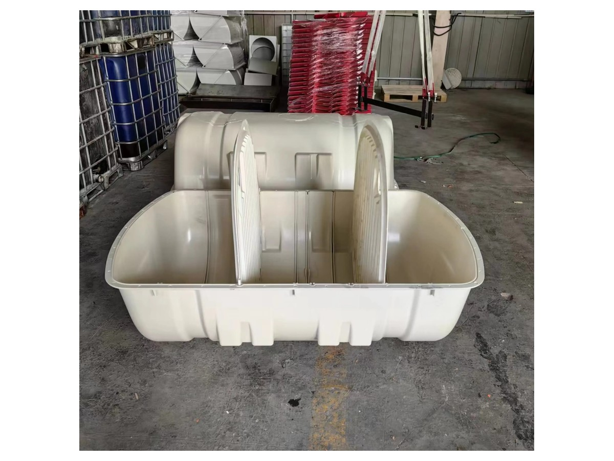
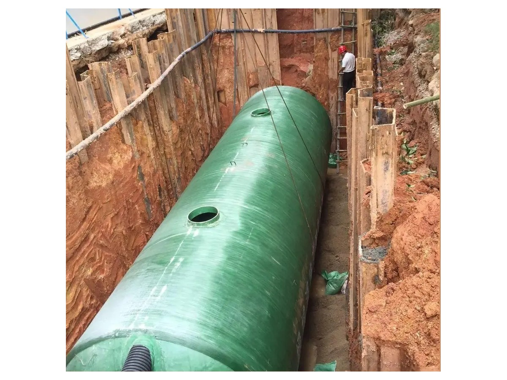

成品化粪池与安装配置，结合使用人数、有效容积和现场条件确定方案。
设备外观与配置，点击图片可放大查看。


通过沉淀与厌氧作用进行预处理，后续排放路径需纳入整体给排水设计。
设备选型 · 泵房布置 · 图纸配合
《建筑与小区雨水控制及利用工程技术规范》（GB 50400—2016）。政府公开文件引用 ↗
《玻璃钢化粪池技术要求》（CJ/T 409—2012），适用材料范围为玻璃钢。全国标准信息公共服务平台 ↗
具体工程还需核对现行强制性要求、地方规定及项目设计条件。
留下项目类型、规模和联系方式，便于进一步核对技术需求。
在线留言暂未开放，请通过电话咨询。 18026396076
请通过电话与我们联系。